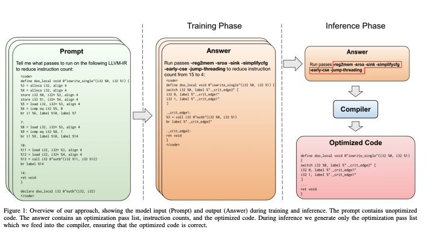

The application of Large Language Models (LLMs) in optimizing LLVM assembly for code size is emerging, but is it truly shaping a new reality or just a theoretical advancement? Over the weekend, I delved deep into a new paper titled LLMs for Compiler Optimization which explores the application of Large Language Models (LLMs) in optimizing LLVM assembly for code size.
TL;DR
The paper presents a 7B-parameter transformer model trained from scratch to optimize LLVM assembly for code size. The paper claims a 3.0% improvement in reducing instruction counts compared to the compiler, and it reportedly generates compilable code 91% of the time, perfectly emulating the compiler’s output 70% of the time. But how substantial are these improvements in real-world applications?
For a deep understanding, I encourage you to read the full paper, but if you’re short on time, this blog post will give you the highlights and my take on it.
In this blog post, I will break down the key takeaways from the paper and shed light on the potential of LLMs in the realm of compiler optimizations. Stay with me as we unravel the intricacies of this research and explore the frontier of compiler optimizations.
Understanding the Basics
Before we dive in, let’s understand a few terms:
LLVM Assembly/LLVM-IR: LLVM Intermediate Representation (IR) is akin to a universal language translator, sitting between high-level languages and machine code. It is a low-level programming language used in the LLVM compiler, a collection of modular and reusable compiler and toolchain technologies, serving as a stable and optimized bridge facilitating clear communication.
Compiler Optimizations: These are techniques used to enhance the code’s performance and efficiency without altering its functionality. The optimizations are performed on LLVM-IR in this context.
Deep Dive into the Technical Details
The researchers presented a transformer model, trained from scratch to optimize LLVM assembly for code size. This model takes unoptimized assembly as input and suggests a list of compiler options to best optimize the program. It predicts instruction counts before and after optimization, and even the optimized code itself, enhancing its depth of understanding and optimization performance.
To appreciate the depth of this research, let’s delve into the technical specifics outlined in the paper:
1. Model Architecture and Tokenizer
- Model Architecture: The researchers utilized the Llama 2 architecture with 7B parameters, characterized by 32 attention heads, 4096 hidden dimensions, and 32 layers, and initialized from scratch.
- Byte Pair Encoding (BPE) Tokenizer: This tokenizer breaks down text into subwords or smaller units, facilitating the efficient handling of a large vocabulary. It is instrumental in processing the input data into tokens that the model can understand.
2. Sequence Length
- 2048 Tokens: The chosen sequence length, representing the maximum number of tokens that can be input into the model in a single batch. This choice is a balancing act between computational resources and the ability to process large LLVM-IR code sequences.
3. Tokenization Details
- 2.02 Characters per Token: The Llama 2 tokenizer, on average, represents 2.02 characters of LLVM-IR code in each token.
- 2KB Limit: This limit is derived from the tokenization rate, establishing the maximum LLVM-IR sequence size that they can train on, which is approximately 2KB.
And our answers are out!
— Thomas Wolf (@Thom_Wolf) September 11, 2023
Running on 1B tokens from the web (filtered and mostly in English as details in https://t.co/8hXhqmK3ND) we got🥁
- GPT4 tokenizer (100k vocab) gives you 0.997B tokens
- Falcon tokenizer (64k vocab) gives you ~5% more tokens (1.04B)
- Llama2 tokenizer… https://t.co/suxqhHmOWp
Surprising Abilities of LLMs
Contrary to the initial assumption that the paper would highlight the shortcomings of LLMs, it revealed that a sufficiently trained LLM could predict and directly apply the best optimizations to an input code, bypassing the need for a compiler altogether. This was a surprising revelation, showcasing the untapped potential of LLMs in code optimization.
Auxiliary Learning Tasks

The model was tasked with two auxiliary functions to foster a deep understanding of code optimization mechanics, but one might wonder if this approach truly covers all the necessary grounds for optimization.
- Generating instruction counts before and after applying optimizations.
- Producing the output IR post-optimization.
These tasks were hypothesized to facilitate better pass-ordering decisions, a crucial aspect of compiler optimizations, and they did indeed yield promising results.
Challenges and Future Directions
While the results are promising, one cannot overlook the significant limitations of the approach, including the restricted sequence length of inputs, known as the context window. The researchers targeted a 2k-token context window, necessitating the splitting of IRs into individual functions to fit within this window. This approach, albeit effective, curtails intra-function optimization and limits the context available for making optimization decisions.
The paper suggests that evolving techniques for handling long sequences could potentially overcome this limitation, hinting at a promising avenue for future research.
Math Reasoning and Logic
The paper also touched upon the challenges LLMs face in arithmetic reasoning, a vital aspect of compiler optimizations. It proposed a “chain-of-thought” approach, where models are trained to break down complex reasoning problems into incremental steps, offering a promising direction for enhancing LLMs’ capabilities.
Further Listening
If you’re keen to delve deeper into the world of compilers and AI, I highly recommend listening to the latest episode of the Latent Space Podcast where Chris Lattner inventor of LLVM, shares insights on the future of AI software and the role of compilers in this exciting era. The podcast touches upon several intriguing points, including:
- The potential of compilers to abstract away complex processes, allowing for more efficient coding.
- The initiative to enhance Python’s capabilities for parallel computing through Mojo.
- The efforts by Modular to diversify the architectures and hardware utilized in AI, moving beyond the current reliance on transformer architectures and NVIDIA’s hardware.
It’s a rich source of information and presents a visionary perspective on the evolving landscape of AI and compiler technologies.
My Take
While I see potential for further exploration in this field, I maintain a cautious optimism given the early stage of this research.
It would be fascinating to see if this approach could be leveraged to optimize other metrics such as runtime and energy efficiency. In fact, the practical implications of optimizing compiler configurations are currently being explored in a Kaggle competition hosted by Google.
Scaling to larger model sizes could potentially yield better results too, as the researchers only utilized a 7B parameter model. Moreover, addressing the limitation of the context window through fine-tuning for longer contexts, as discussed in my other blog, could open up avenues for more advanced optimizations.
In conclusion, while the paper paints a promising picture for the role of LLMs in compiler optimizations, it is essential to remain cautious. Given that the LLAMA 2 model weights were released, it would be beneficial for the community if the weights of this specific model were also shared. However, I perfectly understand if the researchers wish to spend more time exploring all realms before releasing it to the public. As we anticipate further research in this domain, a skeptical yet hopeful eye remains necessary.